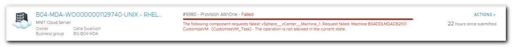

Failed Deployment Handling¶
The automated provision process is a complicated beast operating in a complicated environment and will error out sometimes. Failures will be clear from the DEPLOYMENTS tab. Example
Failed Deployment: What to do¶
- Compare the current deployment error to known errors.
- If a matching error is found, follow the recommended solutions.
- If the recommended solution doesn't work, contact the vRA Support Team.
Known Errors¶
CustomizeVM Error¶
The following component requests failed: vSphere__vCenter__Machine_1. Request failed: Machine B04DDLMDADB2101: CustomizeVM : [CustomizeVM_Task] - The operation is not allowed in the current state..
Solution 1: Resubmit the deployment from DEPLOYMENTS-ACTIONS-RESUBMIT one time
Error text: The following component requests failed: vSphere__vCenter__Machine_1. Request failed: Machine B04DDLMDADB2101: CustomizeVM : [CustomizeVM_Task] - The operation is not allowed in the current state..
Unable to resolve the DNS entries that were created in 11 minutes¶
Error text: The following component requests failed: vSphere__vCenter__Machine_1. Request failed: B04PALGITLAB001: sendEBSMessage15(workflow=807e9d6f-afa4-4069-a92b-82afeacc9dea) Error in state VMPSMasterWorkflow32.BuildingMachine phase PRE event (queue = a9b1ce25-9620-42c7-95ab-4c883a72fdbd): Extensibility consumer error(10010) - InternalError: validateDNSAdded : Unexpected error encountered. (DnsException: Unable to resolve the DNS entries that were created in 11 minutes... failing. Potential fix is to decrease replication time and TTL cache times.) (Workflow:DNS machineBuilding / Validate DNS Entries (item14)#5) (Workflow:DNS machineBuilding / Validate DNS Entries (item14)#8).
Solution 1: Resubmit the deployment from DEPLOYMENTS-ACTIONS-RESUBMIT one time
A general system error occurred: vix error codes = (3016, 0)¶
Error text: The following component requests failed: vSphere__vCenter__Machine_1. Request failed: G46PPWCVBKWS02: sendEBSMessage19(workflow=369b8a28-294e-40df-8ef3-dd938df71e76) Error in state VMPSMasterWorkflow32.MachineProvisioned phase PRE event (queue = f5220680-7582-4775-a4d9-6c022b11e20a): Extensibility consumer error(20999) - A general system error occurred: vix error codes = (3016, 0). (Workflow:Run program in guest / Scriptable task (item1)#15) and G46PPWCVBKWS02: sendEBSMessage20(workflow=369b8a28-294e-40df-8ef3-dd938df71e76) Error in state VMPSMasterWorkflow32.MachineProvisioned phase POST event (queue = 8e993bd4-3979-4059-8445-af80270a2643): Extensibility consumer error(20999) - Cannot determine what exception to throw. 'Exception binding' is empty..
Solution 1: Resubmit the deployment from DEPLOYMENTS-ACTIONS-RESUBMIT one time
Hostnames must be unique, please check the log file and verify the Hostname rendered as expected.¶
Error text: The following component requests failed: vSphere__vCenter__Machine_1. Request failed: BG-G46-MNIT1560: sendEBSMessage15(workflow=c0373f5f-6f94-4da5-bf1a-6a91bc54f116) Error in state VMPSMasterWorkflow32.BuildingMachine phase PRE event (queue = 28b298d4-872d-4daf-9c3b-2dd243aec072): Extensibility consumer error(10010) - Exception: Exiting Custom Naming... a unique Hostname was not able to be generated. The previous generated hostname was 'G46PPWCVBKWS01', the newly generated hostname is 'G46PPWCVBKWS01'. Hostnames must be unique, please check the log file and verify the Hostname rendered as expected. (Workflow:Custom Naming / Generate Hostname (item29)#8) and BG-G46-MNIT1560: sendEBSMessage4(workflow=c0373f5f-6f94-4da5-bf1a-6a91bc54f116) Error in state VMPSMasterWorkflow32.Requested phase PRE event (queue = 6f127334-c6eb-4c58-ba2e-1f0aa7f319d4): Extensibility consumer error(20999) - Exception: Exiting Custom Naming... a unique Hostname was not able to be generated. The previous generated hostname was 'G46PPWCVBKWS01', the newly generated hostname is 'G46PPWCVBKWS01'. H...
Solution 1: Notify vRA support staff. Contacts
Extensibility consumer error(10030)¶
Error text: The following component requests failed: vSphere__vCenter__Machine_1. Request failed: T79TAW0003: sendEBSMessage19(workflow=8a49c258-a1e3-473b-a6a7-0628b1f46ee8) Error in state VMPSMasterWorkflow32.MachineProvisioned phase PRE event (queue = fb1be760-6151-4a41-96d3-1bd08d30836f): Extensibility consumer error(10030) - {com.vmware.csp.core.designer.service@event.subscription.workflow.execution.timeout} and T79TAW0003: sendEBSMessage20(workflow=8a49c258-a1e3-473b-a6a7-0628b1f46ee8) Error in state VMPSMasterWorkflow32.MachineProvisioned phase POST event (queue = eb7362a8-bf05-4571-9ad5-d8321fd4604c): Extensibility consumer error(10030) - {com.vmware.csp.core.designer.service@event.subscription.workflow.execution.timeout}.
Solution 1: Notify vRA support staff. Contacts
Provider service is not available or in error state¶
Error text: The following component requests failed: vSphere__vCenter__Machine_1. Allocation request [Composition RequestId: [4ac4e80a-44a7-4009-8c0f-e69592ed4108], CompTypeId: [Infrastructure.CatalogItem.Machine.Virtual.vSphere], BlueprintId: [AllinOne1], CompId: [vSphere__vCenter__Machine_1], BlueprintRequestId: [97f76329-225a-4e65-9692-190d34e80c62], RootCafeRequestId: [417f8eb2-223d-4000-a507-93d3036593f7], SubtenantId: [a7c15a39-bfc6-46be-a084-2c19ebc2c87e]] with binding id [b16a68a0-cd5c-4d5a-a512-0441bb6d38c0] failed with [Provider service is not available or in error state.].
Solution 1: Notify vRA support staff. Contacts
Execute AnsibleTowerProfile JobTemplate¶
Error text: Event Broker Subscriber error 20999 - 'Error: Launch Job Template: run failed. Begin deprovision. (Workflow:Execute AnsibleTowerProfile Job Template / Execute AnsibleTowerProfile JobTemplate (item3)#80)'
Solution 1: Notify vRA support staff. Contacts
400 series timeout errors at form submission time¶
Solution 1: Select SUBMIT again
Deployment Failure Example¶

Resubmit Option¶
Some errors occur as a result of transient or intermittent issues in the larger environment and will allow a simple RESUBMIT (found under ACTIONS in the failed deployment). These are the minority and should only be done under the direction of the virtualization team or as directed by a known errors solution.
Remote Console tab won't appear¶
Be sure popups are allowed